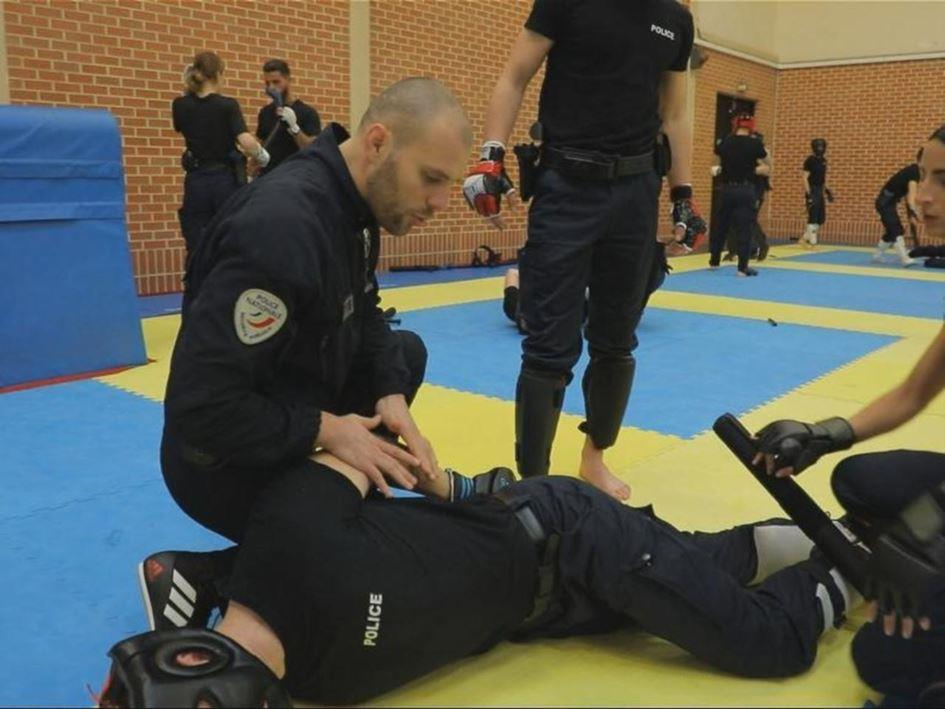

L’usage de la force en période de confinement et de couvre-feu
par Hervé COMMINSOLI
1 - Quel contexte ?1
Sur l’année 2020 (pendant le premier confinement du 13 mars au 11 mai) et début 2021, il a été observé, à travers des vidéos2 et des témoignages, un usage illégal de la force et/ou des propos discriminatoires de la part des forces de l’ordre dans plusieurs villes de France.
La plupart de ces vidéos illustrent des cas de violations du droit international relatif aux droits humains : usage illégitime, excessif ou non nécessaire de la force, insultes racistes ou homophobes.
Le travail des forces de l’ordre est complexe et difficile, et souvent elles sont livrées à elles-mêmes mais elles savent assurer les contrôles et faire en sorte que cela puisse se dérouler dans le respect du droit.
Cependant, on observe des cas préoccupants de façon non-exhaustive que certains de ces contrôles et d‘interpellations ont eu pour conséquence d’entraîner un usage illégal de la force, avec des propos discriminatoires.
Ces exemples posent question sur plusieurs tendances :
- Un usage de la force non justifié et utilisé comme punition, risquant d’être apparenté par les journalistes et autres ONG comme des traitements cruels, inhumains et dégradants ;
- L’usage de techniques dangereuses ;
- Des propos à caractère discriminatoire lors d’opérations de police.
La gravité des faits constatés, leur répétition en différents endroits du territoire, montrent qu’il ne s’agit pas de comportements isolés.
2 – Sur la maîtrise de l’usage de la force
Il faut être prudent lorsqu’on sait que les médias ou le quidam peuvent s’emparer de vidéos et en faire une analyse purement contextuelle. Ainsi, on peut voir un ou plusieurs membres des forces de l’ordre porter des coups aux personnes contrôlées ou arrêtées : coups de pied, de poing, ou à l’aide d’un objet.
Dans ce genre de situations, ces coups pouvaient avoir été portés alors que les personnes étaient au sol. Dans aucune de ces situations le fait de porter des coups ne peut se justifier par un objectif opérationnel légitime.
Aussi la formation du personnel devient alors nécessaire, obligatoire et doit être pratiquée de façon quotidienne afin de faire acquérir des réflexes tant sur le plan physique que psychologique.
Afin d’appuyer le propos, on peut faire référence à l’exemple suivant où, à Toulouse, dans la nuit du 24 au 25 avril, un homme a été frappé à plusieurs reprises, à l’aide d’une muselière, sur la tête et la nuque, alors qu’il ne présentait aucun signe d’agressivité au moment des faits, et qu’il était plaqué au sol.
Tout en le frappant, les policiers lui donnent des ordres (« couche toi », « mets tes mains dans le dos »). Dans ce contexte, il a été facile pour les médias de relayer l’information suivante :
« Le fait de frapper un individu pour qu’il obtempère n’est pas conforme au droit international car ce n’est ni nécessaire ni proportionné. »3
C’est pourquoi, l’attention doit être portée sur le fait que malgré un contexte antérieur à une interpellation filmée, rien ne peut être invoqué pour justifier les coups portés.
Si l’on considère l’exemple d’un homme qui, aurait dans un premier temps fui le contrôle de police. En aucun cas il ne peut être considéré comme légitime que les forces de l’ordre utilisent la force comme punition corporelle.
Il convient de rappeler que les infractions et délits commis par les personnes ne peuvent faire l’objet de punitions que dans un cadre légal, c’est-à-dire via une décision administrative ou judiciaire (selon le contexte) et avec un accès à une procédure équitable.
De la même manière, en cas de recours au Taser, notamment lors d’une arrestation d’un homme. Il faut être extrêmement vigilant sur le nombre de reprises alors qu’un individu est plaqué au sol par des agents.
La question qu’il faut se poser : est-ce nécessaire autant de reprises ? et si plaqué au sol, est-ce légitime et nécessaire ?
L’expérience nous montre que dans ce cadre précis, l’usage de la force n’apparaît donc pas nécessaire. En outre, si le Taser semble avoir été utilisé en mode « contact », un mode dont le seul effet est d’infliger de la douleur, ce qui n’est pas un objectif légitime.
3 – Pour quelle légitimité ?
Dans de nombreuses situations, il apparaît que l’objectif de l’usage de la force serait détourné de son cadre et serait davantage une façon de punir la personne, ce qui n’est pas légitime.
De plus, cela n’est pas nécessaire, car d’autres moyens sont disponibles : de la négociation à l’usage d’une force plus faible visant spécifiquement à obtenir l’objectif visé (fouille de la personne pour obtenir des papiers, techniques de contrôle pour la menotter).
On peut penser que soit l’agent n’a plus la maîtrise psychologique du déroulement des évènements soit l’existence antérieure de faits laisse présager que le facteur de la vengeance était présent.
En effet, porter des coups pour obtenir qu’une personne, déjà maîtrisée, qu’elle obtempère est disproportionné et a pour conséquence directe d’être interprété comme un acte dégradant et pouvant causer des blessures.
Naturellement, il convient de palier à cela et d’envisager d’autres solutions. Dans plusieurs actions, situations, la personne interpellée peut être plaquée au sol, et on remarque que les plaquages sur le ventre sont exercés de façon plus ou moins brève, avec plus ou moins de pression.
Ainsi, concernant notre exemple relaté, à Toulouse, l’homme interpellé dans la nuit du 24 au 25 avril a été plaqué au sol et menotté les bras dans le dos. Sur les 30 dernières secondes de la vidéo, il est maintenu allongé sur le ventre, menotté les mains dans le dos, avec un policier qui lui appuie sur le torse avec son genou pour le plaquer au sol.
Hors de toute procédure et d’autres éléments, il est difficile de dire ou d’évaluer la durée du maintien dans cette position.
Le quotidien stressant des forces de l’ordre, la pression hiérarchique exercée, la peur des médias imprévisibles contribuent à faire oublier tout bon sens ou tout du moins les dangers liés au plaquage ventral comme l’asphyxie positionnelle. Le risque devient alors un risque létal.
La précipitation, les mouvements désordonnés de la foule, le regroupement d’individus sont autant de circonstance qui peuvent conduire à cette précipitation non encadrée et contrôlée.
Le risque devient alors de menotter de manière assez vive un individu, alors qu’il ne présentait pas de menace.
De façon conjoncturelle, les médias sont très attentifs aux comportements des forces de l’ordre et précisément sur l’usage de la force à l’encontre des journalistes alors qu’ils sont en train d’exercer leur métier.
Ce phénomène permet aux médias de la presse écrite ou télévisuelle de relayer le fait que le comportement ou l’action exercée ont constitué une entrave à la liberté de la presse et une atteinte à la liberté d’expression.
4 – Sur le risque de discrimination lors des contrôles
Lors d’arrestation ou d’interrogatoires, il est mis en avant par les mis en cause du caractère vexatoire de certains propos et notamment d’injures à caractère racistes et/ou discriminatoire.
Ces faits peuvent être aussi relayés par des témoins de scènes d’arrestation et au cours desquelles l’agent s’en prend aux témoins. Un échange d’insultes peut ainsi avoir lieu avec un voisin qui observait la scène.
Des propos homophobes comme « tafiole », « baltringue » et discriminatoire « rentre dans ton pays » sont souvent argués par soit les témoins soit les mis en cause eux-mêmes4.
Sur la solution à apporter
Il est important dans le cadre précis que les autorités françaises puissent réagir immédiatement réagi, et de façon appropriée, en dénonçant publiquement les propos tenus, en prenant des mesures hiérarchiques de suspension des policiers concernés et du point de vue judiciaire.
Par ailleurs, l’ouverture d’une enquête peut être décidée par le Procureur de la République, et confiée à l’Inspection générale de la police nationale.
Dans l’esprit du peuple et des médias, lorsqu’ils émanent de représentants des forces de l’ordre, les propos discriminatoires ont une influence particulièrement néfaste sur le respect des droits humains dans leur ensemble. Ils vont à l’encontre des mesures mises en œuvre par l’État dans le cadre de son obligation de lutter contre toutes les formes de discrimination.
La conséquence est que de tels propos sont susceptibles de créer un sentiment de méfiance envers la police de la part des groupes visés. De ce fait, les victimes d’actes ou d’infractions à caractère discriminatoire peuvent être moins enclines à porter plainte auprès de la police et obtenir à terme réparation.
Aujourd’hui, en 2021, nous sommes face à un risque réel de rebellions, de refus du respect des heures de couvre-feu, de sorties sans port de masques, etc
La durée du confinement, le recours au couvre-feu sont autant de rupture et de contraintes pour les personnes et qui n’acceptent plus des mesures restrictives de liberté, liberté d’expression mais surtout liberté de circulation.
La privation de sorties au restaurant, au cinéma, dans des salles de sport sont autant de facteurs aggravant la défiance du peuple à l’égard du pouvoir.
Cette défiance s’en retrouve aggravée et surdimensionnée lors de dérapages en cas de contrôles, sanctions par les forces de l’ordre.
Il est rappelé dans les écoles de police, lors de formation continue, de briefing quotidien que même en cas d’insultes de la part d’un tiers, il ne faut pas répondre par des insultes ou par l’usage de la force.
L’agent peut envisager de recourir aux moyens procéduraux appropriés (plainte en matière civile – en droit international, l’outrage est un terme trop large pour être sanctionné au pénal sans constituer une atteinte disproportionnée à la liberté d’expression).
Seules des menaces ou violences physiques à son encontre peuvent justifier un usage de la force, en dernier recours et de manière proportionnée.
Ainsi l’usage illégal de la force ou les discriminations de la part des forces de l’ordre, et toute forme d’impunité en cas de violations des droits humains, contribuent à altérer la confiance de la population en la police.
En conclusion
Cette perte de confiance est particulièrement problématique dans un contexte de lutte contre une pandémie, où la confiance dans les autorités est un élément important pour la mise en œuvre des mesures de protection du droit à la santé.
On le constate encore plus avec la problématique de la vaccination où la dérive de communication du pouvoir, des informations déformées par les médias et relayées par celles-ci, accentuées par des désaccords de scientifiques sur le processus à mettre en place. Ces dérives constituent un reproche fait par le peuple qui cherche à comprendre et à accepter les mesures de confinement. Il est en effet difficile d’accepter tout et son contraire !
Il ressort de différentes expériences de management à travers le monde, qu’il est en général plus efficace de pratiquer une approcher directe, simple, pédagogique plutôt qu'une approche répressive rigoureuse qui risque de contribuer à une augmentation des tensions et un rejet de ces règles. On le voit d’ores et déjà à travers certains pays d’Europe où ont lieu des soulèvements de foules, sans port du masque, échappant aux contrôles, se confrontant aux forces de l’ordre.
Enfin, on comprend facilement pourquoi Amnesty International5 appelle les autorités françaises à réagir de façon systématique à toute situation révélant des propos et des pratiques discriminatoires de la part de certains membres des forces de l’ordre.
L’ère du tout numérique et des réseaux sociaux ont considérablement changé la société et son paradigme traditionnel.
Désormais, les peuples attendent une condamnation publique de ces comportements, l’adoption de mesures disciplinaires à titre conservatoire et l’ouverture d’enquêtes judiciaires. Ce sont les mesures indispensables pour lutter contre toutes formes de discriminations et toute forme d’impunité.
La préconisation est que compte tenu des enjeux qui ne sont plus les mêmes, il serait opérationnel, efficace et efficient de faire en sorte que des instructions claires puissent être données aux agents déployés sur le terrain pour rappeler les conditions de l’usage de la force et le risque de sanctions en cas de non-respect de ce cadre légal.
Tous ces cas de violations des droits humains doivent faire l'objet d'enquêtes indépendantes, impartiales et efficaces, afin de garantir aux victimes un accès à la justice.
E.C.
NOTES ET RÉFÉRENCES
1. Loi n°2020-290 du 23 mars 2020 d’urgence pour faire face à l’épidémie de covid-19.
2. Rapport d’Amnesty International, « POLICE ET PANDÉMIELES MESURES PRISES EN EUROPE POUR FAIRE FACE À LA PANDÉMIE DE COVID-19 ONT DONNÉ LIEU À DES VIOLATIONS DES DROITS HUMAINS », novembre 2020. https://www.amnesty.org/download/Documents/EUR2103562019FRENCH.P
3. Article de LA REVUE DES DROITS DE L’HOMME, Novembre 2020, « Les pratiques policières pendant l'état d'urgence sanitaire », Estelle Dantan, Fanny Lange, Mileva Boulestreau, Shirley Gasse, Yasmin Fernandez et Vincent Louis. https://doi.org/10.4000/revdh.10623
4. Article du 18 juin 2020, « Ils nous parlent comme à des chiens », Human Rights Watch, New York, USA
5. Communiqué de presse publié le 7 mai 2020, « FRANCE. Pratiques policières pendant le confinement », Amnesty International dénonce des cas de violations des droits humains.
Partager cette page